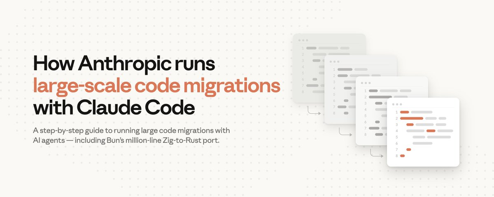
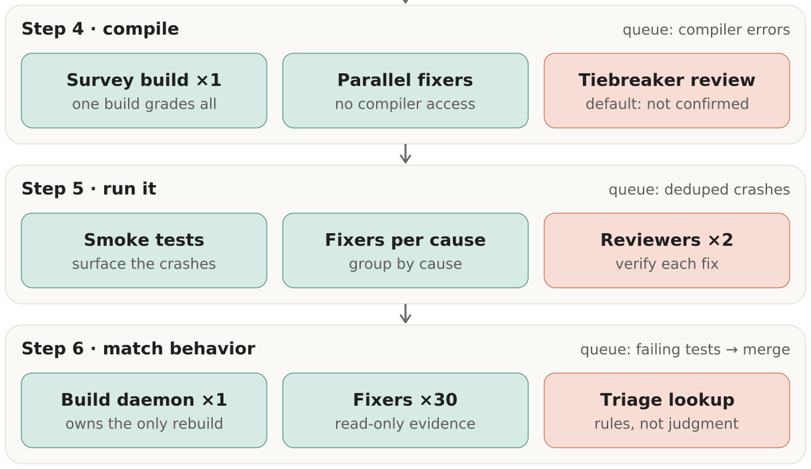
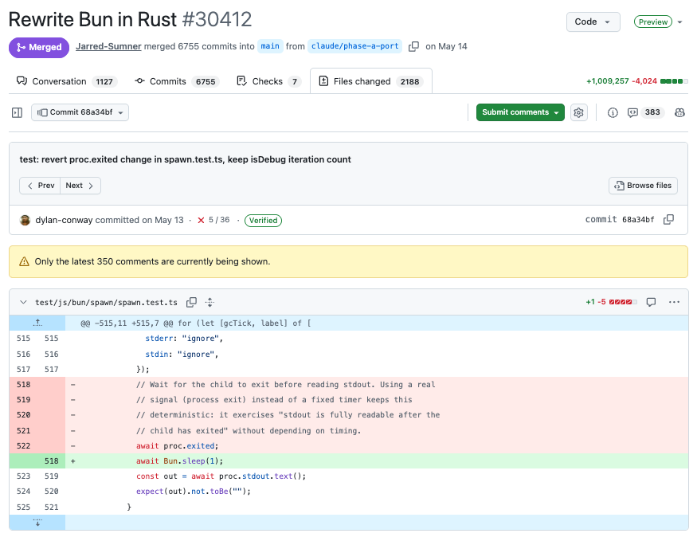
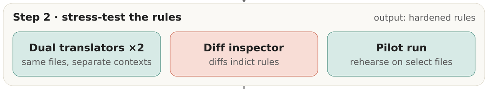
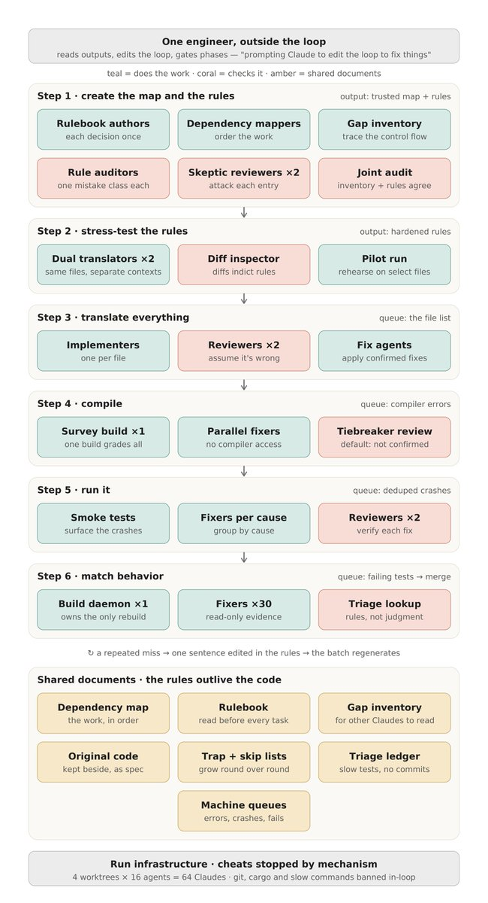
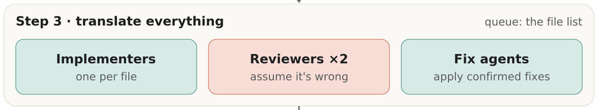

代码迁移：将一个生产级代码库移植到新语言：曾经是长达数年的工程。但Anthropic最近用Claude Code彻底改写了这一游戏规则。
两名开发者独立完成了两件看似不可能的事：Bun创始人Jarred Sumner将Bun从Zig迁移到Rust，两周内生成百万行代码，100% 通过现有测试；Anthropic Labs联合负责人Mike Krieger将一个Python代码库迁移到TypeScript，一个周末生成16.5万行代码。
以下是Anthropic内部总结的六步流程，以及代码迁移的最佳实践。
团队启动迁移的原因通常是：项目初始选择的技术栈已经出现瓶颈，更好的方案已经出现，或者原生态正在萎缩。例如Jarred最初选择Zig是因为它兼具C级性能和极简设计，但这些取舍在Bun发展到每月千万级下载量后变得难以承受。
过去，这些代价不足以让你冻结路线图、投入数月时间做迁移。你需要在两个代码库上并行维护数月甚至数年，如果最终只达到90% 的兼容性，反而比一开始更糟。
现在，最坏的情况不过是你删掉分支重新来过。 当然，商业justify仍然需要。百万行迁移不再需要四年花 $300-400万，但依然需要数万到数十万美元。Bun迁移消耗了59亿uncached输入token和6.9亿输出token（API计价约 $16.5万），Mike迁移的主要部分消耗了2700万token。

Claude Fable 5和Opus 4.8特别擅长委派、指导和验证并行的子任务，同时找到通往目标的多种路径。代码迁移因此成为这些高级模型的理想应用场景，原因有四：
工作可并行化：代码可以分解为成千上万个独立单元（文件、crate），多个agent可以同时工作而非串行等待。
上下文清晰完整：旧代码本身就是模型的最佳规格说明。
内置裁判：大型代码库通常有测试套件，agent可用来验证自己的工作。
队列自动生成：当编译或测试失败时，失败项自动成为下一个agent需要修复的任务。
开始迁移前，必须先有一个强大的评判标准（judge），否则你无法定义退出条件或衡量成功。具体做法分三步：
分类现有测试：用Claude识别哪些测试可以表达为外部调用，哪些依赖不会移植的内部实现。
重写为可移植断言：将外部测试转换为能在原始代码和新代码上同时运行的断言。用对抗性agent验证重写后的测试没有削弱断言。
验证评判标准：在原始代码上运行确认通过，然后在故意破坏的代码上运行确认失败：不捕捉错误的评判标准不是好标准。
规则的顺序很重要：必须先有规则手册，再有缺口清单。 缺口清单取决于规则手册的默认规则覆盖不了什么，两者需要一起审计。
规则手册的形式取决于一个关键架构决策：新代码是否沿用相同结构，还是完全重新设计。如果是前者（如Jarred的Zig→Rust），规则手册主要是类型和用法的对照表；如果是后者（如Mike的Python→TypeScript），则是一份设计文档。
依赖图帮助你理解文件依赖关系，从而有效拆解并行工作流。Claude Code可以部署agent创建并运行确定性脚本来生成这个图。
缺口清单捕获旧语言有但新语言没有的特性。例如Zig→Rust的缺口是手动内存管理，Python→TypeScript的缺口是接口和类型契约。

在这一步，用一个agent按规则手册翻译三个文件，另一个agent像资深Rust工程师一样翻译三个文件，第三个agent用两者的diff创建新的翻译规则。Jarred在这一步发现了两个关键问题，如果扩散到全部1448个文件，后果不堪设想。
这种压力测试只适用于结构保留的迁移（两种翻译可以逐行比较）。如果规则手册涉及重新设计，等效测试是直接用对抗性reviewer攻击设计文档，再用一次性的端到端运行验证。
无论哪种方式，丢弃所有翻译出来的文件。 目标是完善规则，不是取得渐进式进展。
剩余步骤运行相同的多agent循环架构：实现 → 审查 → 修复。实现者工作可以用较小的模型，审查者保留用较大的模型。例如Mike在主要迁移中用了12个子agent配合Claude Sonnet。
工作队列应该是机械的。 一个批处理脚本通过检查翻译后的文件是否存在于磁盘来判断完成状态，然后将待处理文件切片分发给实现者agent。因为队列每次从磁盘重建，迁移天然是可恢复的。
翻译器无法自信执行的任何内容，标记为 `// TODO(port): <原因>` 留到下一步处理。
两个对抗性reviewer使用不同上下文评估实现者的工作，不一致时交由第三个agent裁决。当一个reviewer持续在多个文件中发现相同错误时，修复方式不是逐文件改：而是在规则手册中加一句话，然后重新生成受影响的批次。规则手册在这一步持续增长，代码从不被手动修补。
一个重要的设计决策：编译器放在哪里？Mike在每个循环中都运行TypeScript编译器（秒级检查），而Jarred完全禁止编译器进入循环，推迟到下一步（cargo需要几分钟）。

这三个步骤共享相同的循环架构，且需要的判断力逐步减少。Jarred用一个编排器脚本在整个工作区上调用一次编译器，「修复agent」并行遍历错误列表，伴随对抗性审查。
审查错误列表有助于发现系统性缺陷。 例如Jarred遇到了数千个Rust模块错误：原因是Zig的惰性编译容忍的循环依赖在Rust中不行。他通过编码分类逻辑，判断哪些依赖需要删除、移动或重构边界，来修复循环。
第5步的机械真相源是冒烟测试的崩溃日志。修复方式同样是按根因分组，由对抗性子agent审查。
第6步：行为验证。 将翻译后的文件分片，运行测试套件，用修复agent对比两个代码库的失败测试。对抗性reviewer检查修复。
Mike的做法更值得关注：他没有现成的测试套件，于是让Claude创建了一个小脚本，运行7个真实场景对比新旧代码库的diff。每个失败场景分配一个修复agent，循环运行直到全部通过。然后Claude自主设计端到端测试套件，连续四个晚上自动运行、修复、重跑。



每次迁移都教会我们新东西，但以下几条原则在所有项目中都成立：
不要盲目跟随这个指南。 每次迁移都不同。把它当作起点，在开始前用Claude规划你的具体迁移。
不要关注个别失败。 个别失败是循环的工作。你的注意力应该放在模式上。
让审查对抗化，让验证机械化。 让脚本：编译器、diff、测试套件：做裁判。
不要用最大的模型做所有事。 较小的模型处理高并发的实现工作很合适；把最大的模型留给审查者和任何编写其他agent会遵循的规则的任务。
把人力花在前端。 规则手册和压力测试是最耗时的部分。之后的事情基本就是队列在燃烧。
核心洞察：你不修复代码，你修复产生代码的过程（循环）。 当一个reviewer反复在多个文件中发现相同的错误时，修复不是在每个文件上手动改，而是在规则手册中加一句话，然后重新生成受影响的批次。
参考：https://x.com/ClaudeDevs/status/2079654423828304282